Consider the following super-simplified model. Its solution can be traced analytically; it gives some intuition about the behaviour of the model without using the computer. Let the level of perception be distributed uniformly, and the hall size be high enough, so that in fact all types of a continuum of agents in the unit interval are represented. Let the utility of standing at time t be given by the formula Uc(t)=Qx(t)(1+n(t-1)), where 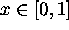 represents the type (perception coefficient), Q is a parameter selected in the interval 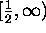 and n(t-1) is the share of the hall which was clapping during the previous period. Let Us(t)=1/2 be the reservation utility for clapping, i.e. the utility above which each individual decides to clap. Let n(0)=0.
We want to examine the dynamics of this process for a fixed value of Q.
For t=1the individual with type x claps if 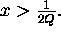 We can
therefore calculate 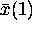 such that, if 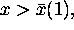 then the
individual type x will clap. Clearly,  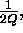 and the
amount of people clapping at period 1 will be 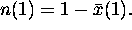 The
difference equation 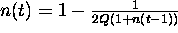 captures the evolution of
the share of agents that clap. The steady state population of clappers is
then 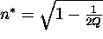 .
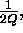 and the
amount of people clapping at period 1 will be 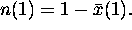 The
difference equation 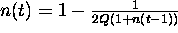 captures the evolution of
the share of agents that clap. The steady state population of clappers is
then 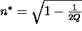 .
Note that for a low quality of the lecture, that is, for 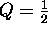 , the clapping will never start. If 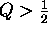 , the agents with 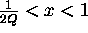 will start clapping. The following period more agents will clap: the cascade will appear. Note that for fixed Q the limit population of clappers does not increase until it reaches 1 as one may initially think. What happens is that those individuals with low realizations of their parameter x will never clap no matter how enthusiastic a big fraction of the population is. We see then that the stylyzed model preserves the preferences of those with positions that are far from those of the majority, but it also cleanly incorpores the collective effects.